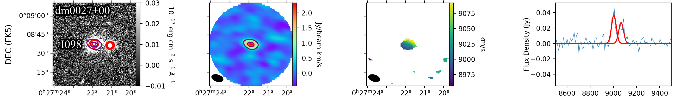

Dwarf Galaxies • ALMA • Molecular Gas
Do Interactions Make Dwarf Galaxies Form Stars More Efficiently?
An ALMA pilot study tests whether close interactions enhance molecular gas and star formation in low-mass galaxies in the same way they can in massive mergers.
Extending molecular-gas studies into the dwarf regime
Dwarf galaxies dominate the low-mass galaxy population and provide nearby analogs for the metal-poor systems common in the early universe. Yet the molecular gas that directly fuels star formation is difficult to detect in these environments, leaving the effect of galaxy interactions uncertain.
Massive mergers can compress gas and trigger intense star formation, but dwarf galaxies differ in their metallicities, gravitational potentials, and interstellar-medium structure. It is therefore not obvious that interactions should produce the same response.
A targeted ALMA pilot sample
As part of the TiNy Titans project, I use ALMA to observe CO(1–0) emission in 10 isolated dwarf galaxy pairs. The sample contains 19 individual galaxies, allowing us to test how molecular gas content varies across interacting low-mass systems without the added influence of a nearby massive host.
CO emission is detected in seven galaxies. These detections provide direct measurements of molecular-gas reservoirs in a regime where such observations remain sparse.


No compelling enhancement in star-formation efficiency
The detected galaxies typically contain molecular-gas masses of order 108 M⊙. Their gas reservoirs and star-formation rates do not provide strong evidence that early-stage interactions systematically elevate star-formation efficiency relative to isolated dwarf galaxies.
The modest detection rate and small sample mean that subtle trends cannot yet be ruled out. Even so, the pilot study shows that a close companion does not automatically produce a starburst-like response in a low-mass system.
Why this matters
These results caution against extrapolating the behavior of massive mergers directly to dwarf galaxies. They also establish a foundation for larger molecular-gas surveys capable of testing when interactions alter star formation in the low-mass systems that were especially common at early cosmic times.